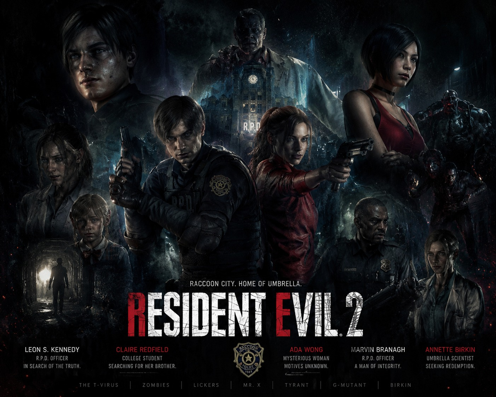
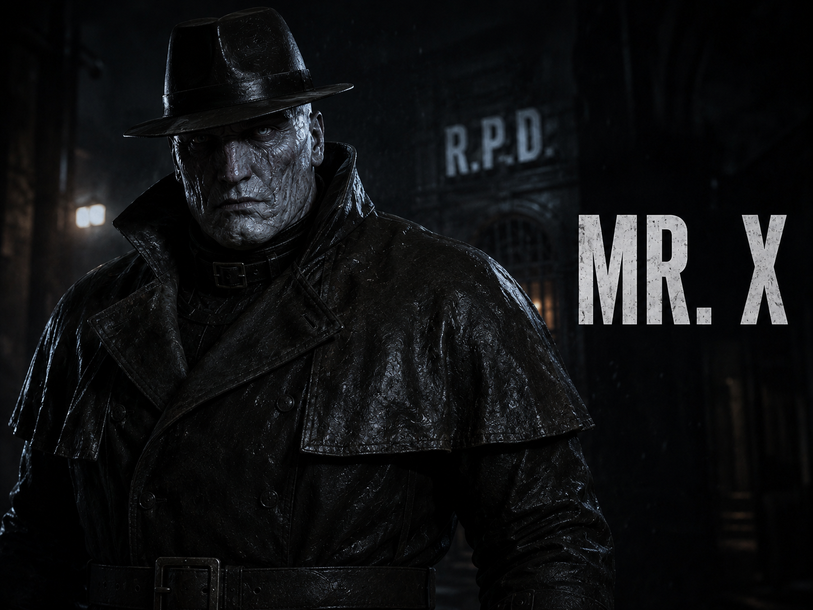

Resident Evil 2 is a survival horror game developed and published by Capcom. The story takes place in the zombie-infested city of Raccoon City. Players follow rookie police officer Leon S. Kennedy and college student Claire Redfield as they struggle to survive.

Leon S. Kennedy is one of the most iconic protagonists in the Resident Evil series. Introduced as a rookie police officer, he survives the nightmare of Raccoon City and later becomes a highly skilled government agent.

Claire Redfield arrives in Raccoon City searching for her brother Chris. Throughout the outbreak she protects Sherry Birkin and uncovers the secrets behind Umbrella Corporation.

Ada Wong is a mysterious spy who assists Leon while secretly pursuing her own objectives.

Sherry Birkin is the daughter of William Birkin and becomes one of the key survivors of the Raccoon City incident.

Mr. X is a Tyrant bio-weapon designed to eliminate survivors and silence witnesses.

William Birkin is the creator of the G-virus and one of the primary antagonists of Resident Evil 2.

Leon and Claire arrive in Raccoon City and quickly discover the city has fallen to a zombie outbreak.

Mr. X begins hunting the survivors throughout the police station.

Leon, Claire and Sherry escape Raccoon City after defeating the monsters and surviving the outbreak.
Resident Evil 2 is available on PlayStation, Xbox and Steam.
| Store | Standard Edition | Deluxe Edition |
|---|---|---|
| PlayStation | 499 | 2999 |
| Steam | 2990 | 3163 |
| Xbox | 707 | 1470 |